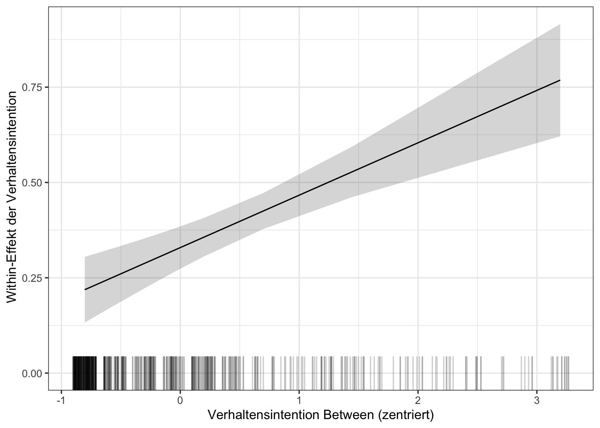

Abschnitt 5 Hybride within-between Modelle
5.1 Das Beste aus beiden Welten?
Ein häufiger Einwand gegen random effects Panelmodelle ist, dass die Annahme nicht mit den random intercepts korrelierter, über die Zeit konstanter Variablen (beobachtet wie unbeobachtet) so stark ist, dass sie in den Sozialwissenschaften eigentlich nie einzuhalten ist (siehe Abschnitt 4.1).
Trotzdem sind random effects Panelmodelle weit verbreitet, da sie uns erlauben, über die Zeit variierende Variablen und über die Zeit konstante Personenmerkmale als Prädiktoren in ein Modell aufzunehmen. Häufig sind wir eben sowohl an kausalen Effekten als auch an Unterschieden zwischen Personen interessiert.
Außerdem ist gerade die Möglichkeit, unspezifische Heterogenität in Treatment-Effekten zuzulassen, in den Sozialwissenschaften sehr attraktiv. Eigentlich gehen wir fast immer davon aus, dass Effekte variabel sind und nicht alle Personen gleichermaßen betreffen.
Das hybride within-between Modell verspricht, unverzerrte kausale within-person Effekte der über die Zeit variierenden Prädiktoren und between-person Vergleiche innerhalb eines Modells zu schätzen.
Dazu werden die über die Zeit variierenden Prädiktoren transformiert und in zwei Variablen aufgeteilt:
- \(x_{it}-\bar{x_i}\) ist der um den Personen-Mittelwert bereinigte within-person Prädiktor.
- \(\bar{x_i}\) ist der Personen-Mittelwert als between-person Prädiktor.
Der Koeffizient des within-person Prädiktors entspricht dem fixed effects Schätzer (siehe Abschnitt 3.1, Within Transformation). Der Koeffizient des between-person Prädiktors quantifiziert die Unterschiede der Personen in \(y\), die durch über die Zeit stabile Unterschiede in \(x\) erklärt werden.
Ein Blick auf die Varianzaufklärung im ersten Beispiel zum random effects Panelmodell in Abschnitt 4.5 zeigt, warum die Trennung dieser beiden Effekte sinnvoll ist. Das Ergebnis ist hier noch einmal reproduziert.
## Linear mixed model fit by REML. t-tests use Satterthwaite's method [
## lmerModLmerTest]
## Formula: verh1 ~ verhint1 + (1 | IDsosci)
## Data: d
##
## REML criterion at convergence: 4554
##
## Scaled residuals:
## Min 1Q Median 3Q Max
## -4.524 -0.202 -0.085 0.165 5.793
##
## Random effects:
## Groups Name Variance Std.Dev.
## IDsosci (Intercept) 0.111 0.334
## Residual 0.341 0.584
## Number of obs: 2304, groups: IDsosci, 576
##
## Fixed effects:
## Estimate Std. Error df t value Pr(>|t|)
## (Intercept) 0.5987 0.0287 975.4311 20.9 <2e-16 ***
## verhint1 0.5155 0.0122 1747.0982 42.3 <2e-16 ***
## ---
## Signif. codes: 0 '***' 0.001 '**' 0.01 '*' 0.05 '.' 0.1 ' ' 1## # Explained Variance by Level
##
## Level | R2
## ---------------
## Level 1 | 0.161
## IDsosci | 0.812- Die Verhaltensintention erklärt sowohl 81% der Varianz zwischen den Personen als auch 16% der Varianz innerhalb der Personen. Wir erhalten aber nur einen Koeffizienten, in dem der within-person Effekt und der between-person Unterschied untrennbar vermischt sind.
5.2 Spezifikation des within-between Modells
within-between Modell mit random intercept
Wir untersuchen wieder den Effekt der Intention, die Wohnung ohne triftigen Grund zu verlassen, auf den Bericht, dies getan zu haben.
Zuerst transformieren wir den Prädiktor
verhint1in einen within-Prädiktorverhint1_wund einen between-Prädiktorverhint1_b.
# Transformation: Trennen von within- und between-Prädiktor
d = d %>%
group_by(IDsosci) %>%
mutate(verhint1_w = verhint1 - mean(verhint1), # within
verhint1_b = mean(verhint1)) %>% # between
ungroup()
# Zwei Personen zur Illustration
d %>%
filter(IDsosci %in% c("050IPY", "02E6C8")) %>%
select(IDsosci, wave, starts_with("verhint1"))## # A tibble: 8 x 5
## IDsosci wave verhint1 verhint1_w verhint1_b
## <chr> <int> <dbl> <dbl> <dbl>
## 1 02E6C8 1 1 -1 2
## 2 02E6C8 2 2 0 2
## 3 02E6C8 3 2 0 2
## 4 02E6C8 4 3 1 2
## 5 050IPY 1 3 -1 4
## 6 050IPY 2 3 -1 4
## 7 050IPY 3 5 1 4
## 8 050IPY 4 5 1 4Am Beispiel von zwei Personen können wir sehen, dass
verhint1_bder Mittelwert der Person über die vier Wellen ist undverhint1_wder Messwert in einer Welle bereinigt um den Mittelwert. Es wird auch direkt deutlich, dassverhint1_bnun per Transformationslogik eine über die Zeit konstante Personeneigenschaft ist.Die Spezifikation des Modells mit
lme4::lmer()folgt derselben Logik wie das random effects Panelmodell in Abschnitt 4.- Als Referenz ziehen wir das entsprechende Null-Modell inklusive der fixed effects für die Panelwellen heran.
- Wir beginnen wieder mit einem random intercept Modell,
(1 | IDsosci). verhint1_wundverhint1_bwerden als Prädiktoren in das Modell aufgenommen.
# Null-Modell als Referenz
wb_0 = lmer(verh1 ~ 1 + factor(wave) + (1 | IDsosci), data = d)
# Within-between Modell mit random intercept
wb_ri = lmer(verh1 ~ verhint1_w + verhint1_b + factor(wave) + (1 | IDsosci), data = d)
wb_ri %>% summary(correlation = FALSE)## Linear mixed model fit by REML. t-tests use Satterthwaite's method [
## lmerModLmerTest]
## Formula: verh1 ~ verhint1_w + verhint1_b + factor(wave) + (1 | IDsosci)
## Data: d
##
## REML criterion at convergence: 4303
##
## Scaled residuals:
## Min 1Q Median 3Q Max
## -5.289 -0.318 -0.044 0.166 6.372
##
## Random effects:
## Groups Name Variance Std.Dev.
## IDsosci (Intercept) 0.0755 0.275
## Residual 0.3165 0.563
## Number of obs: 2304, groups: IDsosci, 576
##
## Fixed effects:
## Estimate Std. Error df t value Pr(>|t|)
## (Intercept) 0.1689 0.0392 1069.4869 4.31 0.000018 ***
## verhint1_w 0.3288 0.0166 1724.0000 19.79 < 2e-16 ***
## verhint1_b 0.7153 0.0159 574.0000 44.86 < 2e-16 ***
## factor(wave)2 0.0200 0.0336 1724.0000 0.60 0.55169
## factor(wave)3 0.1400 0.0337 1724.0000 4.15 0.000034 ***
## factor(wave)4 0.1178 0.0345 1724.0000 3.41 0.00065 ***
## ---
## Signif. codes: 0 '***' 0.001 '**' 0.01 '*' 0.05 '.' 0.1 ' ' 1## [1] 0.18## [1] 0.87# Vergleich mit fixed effects Modell
plm(verh1 ~ verhint1 + factor(wave), data = d, index = "IDsosci", model = "within") %>%
summary() %>% coef()## Estimate Std. Error t-value Pr(>|t|)
## verhint1 0.33 0.017 19.8 1.0e-78
## factor(wave)2 0.02 0.034 0.6 5.5e-01
## factor(wave)3 0.14 0.034 4.2 3.4e-05
## factor(wave)4 0.12 0.034 3.4 6.5e-04- Kausaler Effekt: Wenn die Intention um einen Punkt steigt, dann wird das Verhalten um 0.3 Punkte häufiger. Der Effekt erklärt 18% der Varianz innerhalb der Personen.
- Der Koeffizient des within-Prädiktors entspricht genau dem Koeffizienten eines klassischen fixed effects Modell, wie wir es z.B. mit
plmgeschätzt haben.
- Der Koeffizient des within-Prädiktors entspricht genau dem Koeffizienten eines klassischen fixed effects Modell, wie wir es z.B. mit
- Unterschiede zwischen Personen: Zwei Personen, deren durchschnittliche Intention sich um einen Punkt unterscheidet, unterscheiden sich um 0.7 Punkte in ihrer mittleren Häufigkeit, das Haus ohne triftigen Grund zu verlassen. Dieser Zusammenhang erklärt 87% der Varianz zwischen den Personen.
within-between Modell mit random slope und cross-level Interaktion
- Im within-between Modell können wir den Koeffizienten des within-Prädiktors zwischen den Personen variieren lassen. Dadurch lassen wir Heterogenität um den durchschnittlichen Treatment-Effekt zu. In der Formel ergänzen wir
(verhint_w | IDsosci)- Bell, Fairbrother, and Jones (2019) empfehlen, im Idealfall die Koeffizienten aller, zumindest aber die der wichtigsten within-Prädiktoren zwischen den Personen variieren zu lassen.
- In der Folge können wir testen, auf welche Personenmerkmale sich die unspezifische Heterogenität zurückführen lässt. Hier prüfen wir, ob der kausale Effekt sich nach dem Geschlecht unterscheidet:
verhint1_w * C_sex.
# Random slope für within-Effekt
wb_rs = lmer(verh1 ~ verhint1_w + verhint1_b + factor(wave) + (verhint1_w | IDsosci),
data = d)
wb_rs %>% summary(correlation = FALSE)## Linear mixed model fit by REML. t-tests use Satterthwaite's method [
## lmerModLmerTest]
## Formula: verh1 ~ verhint1_w + verhint1_b + factor(wave) + (verhint1_w |
## IDsosci)
## Data: d
##
## REML criterion at convergence: 4057
##
## Scaled residuals:
## Min 1Q Median 3Q Max
## -6.003 -0.334 -0.068 0.130 7.005
##
## Random effects:
## Groups Name Variance Std.Dev. Corr
## IDsosci (Intercept) 0.0942 0.307
## verhint1_w 0.0968 0.311 0.63
## Residual 0.2429 0.493
## Number of obs: 2304, groups: IDsosci, 576
##
## Fixed effects:
## Estimate Std. Error df t value Pr(>|t|)
## (Intercept) 0.21851 0.03766 1037.67349 5.80 0.0000000087 ***
## verhint1_w 0.40642 0.02469 295.92758 16.46 < 2e-16 ***
## verhint1_b 0.69774 0.01556 605.59516 44.85 < 2e-16 ***
## factor(wave)2 0.00409 0.03043 1616.73231 0.13 0.89316
## factor(wave)3 0.10461 0.03056 1620.45144 3.42 0.00063 ***
## factor(wave)4 0.09744 0.03159 1654.47637 3.09 0.00207 **
## ---
## Signif. codes: 0 '***' 0.001 '**' 0.01 '*' 0.05 '.' 0.1 ' ' 1## Data: d
## Models:
## wb_ri: verh1 ~ verhint1_w + verhint1_b + factor(wave) + (1 | IDsosci)
## wb_rs: verh1 ~ verhint1_w + verhint1_b + factor(wave) + (verhint1_w |
## wb_rs: IDsosci)
## Df AIC BIC logLik deviance Chisq Chi Df Pr(>Chisq)
## wb_ri 8 4284 4330 -2134 4268
## wb_rs 10 4042 4100 -2011 4022 246 2 <2e-16 ***
## ---
## Signif. codes: 0 '***' 0.001 '**' 0.01 '*' 0.05 '.' 0.1 ' ' 1# Interaktion des within-Prädiktors mit Geschlecht
wb_rs_ia = lmer(verh1 ~ verhint1_w * C_sex + verhint1_b + factor(wave) + (verhint1_w |
IDsosci), data = d)
wb_rs_ia %>% summary(correlation = FALSE)## Linear mixed model fit by REML. t-tests use Satterthwaite's method [
## lmerModLmerTest]
## Formula:
## verh1 ~ verhint1_w * C_sex + verhint1_b + factor(wave) + (verhint1_w |
## IDsosci)
## Data: d
##
## REML criterion at convergence: 4062
##
## Scaled residuals:
## Min 1Q Median 3Q Max
## -5.975 -0.338 -0.049 0.149 7.028
##
## Random effects:
## Groups Name Variance Std.Dev. Corr
## IDsosci (Intercept) 0.0935 0.306
## verhint1_w 0.0973 0.312 0.63
## Residual 0.2428 0.493
## Number of obs: 2304, groups: IDsosci, 576
##
## Fixed effects:
## Estimate Std. Error df t value Pr(>|t|)
## (Intercept) 0.26512 0.04446 876.66346 5.96 0.0000000036 ***
## verhint1_w 0.43310 0.03847 280.85689 11.26 < 2e-16 ***
## C_sex -0.06732 0.03377 571.52249 -1.99 0.04664 *
## verhint1_b 0.69476 0.01563 604.19894 44.44 < 2e-16 ***
## factor(wave)2 0.00402 0.03043 1616.08075 0.13 0.89483
## factor(wave)3 0.10435 0.03056 1619.50527 3.41 0.00065 ***
## factor(wave)4 0.09741 0.03158 1653.82795 3.08 0.00207 **
## verhint1_w:C_sex -0.04512 0.04882 272.73255 -0.92 0.35619
## ---
## Signif. codes: 0 '***' 0.001 '**' 0.01 '*' 0.05 '.' 0.1 ' ' 1## Data: d
## Models:
## wb_ri: verh1 ~ verhint1_w + verhint1_b + factor(wave) + (1 | IDsosci)
## wb_rs: verh1 ~ verhint1_w + verhint1_b + factor(wave) + (verhint1_w |
## wb_rs: IDsosci)
## wb_rs_ia: verh1 ~ verhint1_w * C_sex + verhint1_b + factor(wave) + (verhint1_w |
## wb_rs_ia: IDsosci)
## Df AIC BIC logLik deviance Chisq Chi Df Pr(>Chisq)
## wb_ri 8 4284 4330 -2134 4268
## wb_rs 10 4042 4100 -2011 4022 245.62 2 <2e-16 ***
## wb_rs_ia 12 4042 4111 -2009 4018 4.15 2 0.13
## ---
## Signif. codes: 0 '***' 0.001 '**' 0.01 '*' 0.05 '.' 0.1 ' ' 1# Reduktion der Varianz in random slope durch Interaktion
1 - (as.numeric(VarCorr(wb_rs_ia)$IDsosci["verhint1_w", "verhint1_w"]/as.numeric(VarCorr(wb_rs)$IDsosci["verhint1_w",
"verhint1_w"])))## [1] -0.0049- Es gibt substantiell bedeutsame, statistisch signifikante Heterogenität um den durchschnittlichen Effekt der Intention auf das Verhalten.
- Der durchschnittliche kausale within-Effekt und der Unterschied zwischen den Personen bleiben substantiell unverändert.
- Die typischen Effekte (fixed effect von
verhint1_w\(\pm 1 SD\)) schwanken zwischen kleinen und deutlichen Effekten. - Die Aufnahme des random slope verbessert das Modell nach allen Kriterien deutlich.
- Der kausale Effekt ist nicht wesentlich vom Geschlecht abhängig. Er fällt für Frauen unwesentlich und nicht statistisch signifikant schwächer aus als für Männer.
- Die Standardabweichung des random slope aus dem Modell ohne Interaktion hilft, die Effektstärke der Interaktion einzuordnen. Die mittlere Abweichung vom durchschnittlichen Effekt beträgt 0.3 Punkte. Die Effekte für Frauen und Männer unterscheiden sich um 0.04 Punkte. Gemessen an der Gesamt-Heterogenität ist die Heterogenität zwischen den Geschlechtern zu vernachlässigen. Dies zeigt sich auch an der (nicht existenten) Reduktion der Varianz im random slope.
Spezialfall: Interaktion von within- und between-Prädiktor
- Eine Interaktion des within- mit dem between-Prädiktor erlaubt es zu untersuchen, ob sich der kausale Effekt eines Prädiktors in Abhängigkeit der durchschnittlichen Ausprägung unterscheidet. Im vorliegenden Beispiel können wir testen, ob sich die Verhaltensintention stärker bei den Personen zu einer Handlung führt, die allgemein eher vorhaben, diese Handlung auszuüben.
- Um die Koeffizienten in einem Modell mit einem Interaktionsterm aus zwei kontinuierlichen Variablen besser interpretierbar zu machen, zentrieren wir den between-Prädiktor um seinen Mittelwert. Der Mittelwert des within-Prädiktors ist durch die within-Transformation bereits gleich 0.
# Zentrieren des between-Prädiktors
d = d %>% mutate(verhint1_bc = verhint1_b - mean(verhint1_b))
# Interaktion von within- und between Prädiktor
wb_rs_iawb = lmer(verh1 ~ verhint1_w * verhint1_bc + factor(wave) + (verhint1_w |
IDsosci), data = d)
wb_rs_iawb %>% summary(correlation = FALSE)## Linear mixed model fit by REML. t-tests use Satterthwaite's method [
## lmerModLmerTest]
## Formula: verh1 ~ verhint1_w * verhint1_bc + factor(wave) + (verhint1_w |
## IDsosci)
## Data: d
##
## REML criterion at convergence: 4037
##
## Scaled residuals:
## Min 1Q Median 3Q Max
## -6.056 -0.374 -0.062 0.144 7.028
##
## Random effects:
## Groups Name Variance Std.Dev. Corr
## IDsosci (Intercept) 0.0940 0.307
## verhint1_w 0.0864 0.294 0.66
## Residual 0.2423 0.492
## Number of obs: 2304, groups: IDsosci, 576
##
## Fixed effects:
## Estimate Std. Error df t value Pr(>|t|)
## (Intercept) 1.47593 0.02509 1933.84933 58.82 < 2e-16 ***
## verhint1_w 0.32919 0.02825 400.16941 11.65 < 2e-16 ***
## verhint1_bc 0.71534 0.01594 574.00586 44.86 < 2e-16 ***
## factor(wave)2 0.00342 0.03033 1626.70386 0.11 0.91014
## factor(wave)3 0.10593 0.03045 1631.33777 3.48 0.00052 ***
## factor(wave)4 0.10152 0.03146 1664.84967 3.23 0.00128 **
## verhint1_w:verhint1_bc 0.13744 0.02701 345.59075 5.09 0.00000059 ***
## ---
## Signif. codes: 0 '***' 0.001 '**' 0.01 '*' 0.05 '.' 0.1 ' ' 1# Reduktion der Varianz in random slope durch Interaktion
1 - (as.numeric(VarCorr(wb_rs_iawb)$IDsosci["verhint1_w", "verhint1_w"]/as.numeric(VarCorr(wb_rs)$IDsosci["verhint1_w",
"verhint1_w"])))## [1] 0.11# Plot des kausalen Effekts als Funktion des between-Prädiktors
tibble(b1 = fixef(wb_rs_iawb)["verhint1_w"], b3 = fixef(wb_rs_iawb)["verhint1_w:verhint1_bc"],
Z = quantile(model.frame(wb_rs_iawb)[, "verhint1_bc"], probs = (0:10)/10), theta = b1 +
Z * b3, se_b1 = coef(summary(wb_rs_iawb))["verhint1_w", 2], COV_b1b3 = vcov(wb_rs_iawb)["verhint1_w",
"verhint1_w:verhint1_bc"], se_b3 = coef(summary(wb_rs_iawb))["verhint1_w:verhint1_bc",
2], se_theta = sqrt(se_b1^2 + 2 * Z * COV_b1b3 + Z^2 * se_b3^2), ci.lo_theta = theta +
qt(0.05/2, df.residual(wb_rs_iawb)) * se_theta, ci.hi_theta = theta + qt(1 -
0.05/2, df.residual(wb_rs_iawb)) * se_theta) %>% ggplot(aes(Z, theta, ymin = ci.lo_theta,
ymax = ci.hi_theta)) + geom_ribbon(alpha = 0.2) + geom_line() + geom_rug(data = filter(d,
wave == 1), aes(verhint1_bc, 0), sides = "b", inherit.aes = F, position = position_jitter(width = 0.1,
height = 0), alpha = 0.2, length = unit(1, "cm")) + labs(x = "Verhaltensintention Between (zentriert)",
y = " Within-Effekt der Verhaltensintention")
verhint1_w: Der kausale within-Effekt für Personen, deren mittlere Verhaltensintention dem Stichprobenmittelwert entspricht, beträgt 0.3 Punkte.verhint1_b: Zwei Personen, deren mittlere Verhaltensintention sich um einen Punkt unterscheidet, unterscheiden sich dann, wenn ihre aktuelle Verhaltensintention ihrer mittleren Verhaltensintention entspricht, um 0.7 Punkte.verhint1_w:verhint1_bc: Der kausale Effekt unterscheidet sich zwischen zwei Personen, deren mittlere Verhaltensintention sich um einen Punkt unterscheidet, um 0.1 Punkte. Die Interaktion verringert die Varianz im random slope um 11%.- Wie sich der kausale Effekt in Abhängigkeit der mittleren Verhaltensintention verändert, ist in der Abbildung dargestellt. Die “Barcodes” am unteren Rand zeigen die Verteilung des between-Prädiktors in der Stichprobe. Die graue Fläche um die Linie ist ein 95%-Konfidenzintervall.
- Bei Personen, die über die Wellen hinweg eine größere Intention zeigen (= auf between-Prädiktor höhere Werte haben), führt eine Steigerung der Intention zu einer deutlicheren Steigerung der Handlungshäufigkeit. Bei Personen, die insgesamt nur eine geringe Intention haben, nach draußen zu gehen (die deutliche Mehrheit in der Stichprobe), ist der kausale Effekt schwächer ausgeprägt.
Zusammenfassung
We hope the discussion above has convinced readers of the superiority of the REWB model, except perhaps when the within and between effects are approximately equal, in which case the standard RE model (without separated within and between effects) might be preferable for reasons of efficiency. Even then, the REWB model should be considered first, or as an alternative, since the equality of the within and between coefficients should not be assumed. As for FE, except for simplicity there is nothing that such models offer that a REWB model does not. — Bell, Fairbrother, and Jones (2019)
5.3 Übungsaufgaben 6
- Schätze den kausalen Effekt der Einstellung
ein3und der wahrgenommenen deskriptiven Normdesnormp3mit Bezug zum Einhalten des Abstands von 1.5m zu anderen Personen auf die Intention, diese Verhaltensregel zu befolgen. Untersuche auch den Zusammenhang zwischen den über die Zeit stabilen Anteilen der Prädiktoren und dem Kriterium.- Transformiere zuerst die Prädiktoren in jeweils einen within- und einen between-Prädiktor.
- Schätze ein geeignetes Null-Modell mit random intercept als Referenz.
- Schätze das hybride within-between Panelmodell mit random intercept.
- Nimm zusätzlich das eine Dummy-Variable für Ab-50-Jährige als Prädiktor auf.
- Prüfe, ob sich die kausale Effekte zwischen ab und unter 50-Jährigen unterscheiden.
- Schätze das hybride within-between Panelmodell mit random slope für die kausalen Effekte.
- Prüfe auch anhand dieser Modelle, ob sich die kausale Effekte zwischen ab und unter 50-Jährigen unterscheiden.
- Prüfe, ob sich die kausalen Effekte der Einstellung und der wahrgenommenen deskriptiven Norm nach dem mittleren Personen-Niveau des jeweiligen Prädiktors unterscheiden.
- Spezifiziere, schätze und interpretiere ein eigenes hybrides within-between Panelmodell mit Daten aus dem Beispieldatensatz.
Literatur
Bell, Andrew, Malcolm Fairbrother, and Kelvyn Jones. 2019. “Fixed and Random Effects Models: Making an Informed Choice.” Quality & Quantity 53 (2): 1051–74. https://doi.org/10.1007/s11135-018-0802-x.